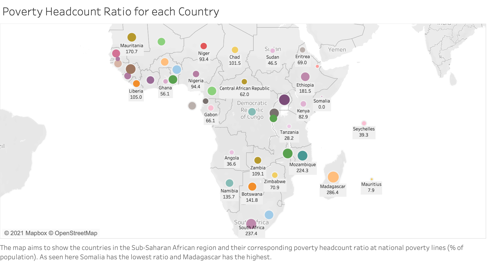

The Sub-Saharan Landscape
An analysis of social, economic, political, health and energy trends
Widespread misconceptions persist about the social, economic, and technological development in Sub-Saharan Africa. Our goal is to dispel these misconceptions by exploring and analyzing trends around the continent to reflect the diversity of Sub-Saharan Africa. While it is clear that the Sub-Saharan African region has witnessed incredible amounts of changes in its social, economical and environmental landscape, these changes are nuanced and thus we will analyze these factors in Sub-Saharan Africa to find trends and correlations within this region. The visualization techniques that we will apply in our explorational study are time series analysis charts, scatter plots, maps, and bar/distribution graphs, interactivity, and animation where useful. We aim to map out the gender-gap, poverty, education rates, employment rates, technological innovation, growth of the countries and several other demographic variables, and through these visualizations, we aim to debunk outdated myths and present a more accurate reflection of developments in Sub-Saharan Africa.
Section 1: Overview
To gain an overview of the population distribution in Sub Saharan Africa, consider the following population density map:
Nigeria (174,387,515) is the most populated country in Sub-Saharan Africa, followed by Ethiopia (96,210,222) and Congo (72,690,899). The Seychelles (91,345) have the smalles population.
Sub Saharan Africa has one of the fastest population growth rates. To understand the regional distribution of population growth, consider the following map:
Djibouti has the highest average population growth with a rate of 4.674, which is measured as a yearly percentage increase. Mauritius and the Seychelles have the slowest rate, which is close to 1.3. Note that this implies that every single country in Sub-Saharan Africa is growing.
How quickly is Africa’s economy growing?
Overall, Africa’s economic landscape has seen incredible growth in the last half century. South Africa and Nigeria have become major economic powers within the continent, and many other countries are growing at startlingly quick rates.
Year: 1960
in 2019 is growing like _______ in 2006.
Year
Section 2: Poverty and Gender:
Let us first take a look at the poverty witnessed by the region.
The national poverty headcount ratio is the percentage of the population living below the national poverty line(s). Despite having a wealth of natural resources, the poverty in the Sub-Saharan region is caused by factors including corruption, poor governance, poor land utilisation, civil wars leading to unending political conflicts, poor infrastructure, diseases and poor health facilities among others. As seen by the map here, Madagascar witnesses the highest poverty headcount ratio and Somalia reports the least. Unfortunately, the natural beauty of Madagascar does not equate to economic success for its population. A mix of climate change issues, deforestation, economics and global rise in food prices have resulted in 71% of Madagascar’s people living below the poverty line.
When the top 10 richest countries (by GDP) in the Sub-Saharan region are looked at, we see that Uganda has the highest poverty gap (77.20%) while Tanzania has the lowest (6.70%). Almost half of Uganda’s population is under the age of 15, representing one of the youngest populations in the world.
Uganda also hosts the largest refugee population in Africa—more than one million refugees have fled their home countries to seek asylum in Uganda. Out of the world’s 19 most unequal countries, 10 are in Sub-Saharan Africa. Growth in Africa occurs in sectors characterized by low absorption of unskilled labour, high earnings inequality and high capital share in total income. Growth in those sectors may spur GDP headline growth but will also exacerbate inequality.
Inequality in the region also results from regressive taxes, unresponsive wage structures and inadequate investments in education, health and social protection for vulnerable and marginalized groups.
What about the gender-gap?
When we look at the relationship between the unemployment of males vs females, we see the general trend is that as the unemployment increases for males, it also increases for females. But what is interesting about this visualization is that when we look at the relationship between the unemployment rate for females and males for each country, we can see the trend for each of them and map out the gender inequalities that are present. We see that countries like Benin, Ethiopia, Mauritius, to name a few - as the percentage of unemployed females increased, there was significantly lesser change to the percentage of the unemployed males.
To interact with this visualization, click on the drop down menu and choose which country from the Sub-Saharan region you want to map out.
Next, we went ahead and selected the top five richest countries in the Sub-Saharan region by GDP: Nigeria, South Africa, Ethiopia, Kenya and Angola to see the varying trends for the life expectancy at birth for males and females for each of the five countries. We see that apart from Kenya and South Africa, the other three countries had a positive trend - the life expectancy at birth for females and males increased over the years. Whereas for Kenya and South Africa, there was a period of time where the life expectancy decreased - we account this decrease to the widespread prevalance of the disease HIV/AIDS.
To interact with this visualization click on any one of the five countries in the legend, and then use the slider to change the years from 1967 to 2017 to see the trend over time.
Section 3: Energy and Climate
The next section will contain an analysis regarding Sub Saharan Africa’s energy and climate landscapes. Africa is stereotypically known to have a severe lack of electricity access and therefore contribute little to climate change effects. Let’s take a look if these statements are facts or misconceptions.
Greenhouse Gas Emissions
Let’s first consider Greenhouse Gas (GHG) emissions. In the time plot below, there is a positive trend in the average CO2 emissions per country. Since the 1970s, the average CO2 emissions have more than tripled. Although methane and NO2 emissions seem to be more stable, there is also a positive trend visible which will only be amplified as Sub Saharan Africa’s population continues to rise. Additionally, it is important to note that a global fight against climate change will only be effective if we limit CO2 and other GHG emissions rapidly. With a rising population, the percentage of renewable energy output MUST increase at a rate higher than the population increase rate.
We can see that the average yearly CO2 emissions for a Sub-Saharan African country in the 2010s is about 16 kt of CO2. For comparison, the U.S. had an output of over 5,000,000 kt of CO2 in 2016. It appears that countries in Sub-Saharan Africa emit indeed a lot less CO2 than developed countries.
Emissions per Capita and Population
An interesting approach to analyze the impact of various countries’ emissions is to compare the population (yearly average in the 2010s) with the total CO2 emissions (yearly average in 2010s) and CO2 emissions per capita (yearly average in 2010s). Noteworthy is South Africa, which has a relatively small population size but by far the highest rate of CO2 emissions in total and per capita. Nigeria on the contrary is the most populous country in Sub Saharan Africa but has a much smaller total CO2 emissions rate and one of the smallest CO2 emissions per capita rate.
South Africa is known to be the most industrialized nation in Sub-Saharan Africa, which is very much depicted in this bar graph. Even though there are several countries with a higher population count, South Africa had the most CO2 emissions per capita.
Electricity Access
It is known that a significant fraction of the Sub Saharan African population does not have access to electricity. But how has this changed over time? Consider this two-plot analysis, where we look at electricity access in Sub Saharan Africa. In the 2010s, the electricity access percentage ranges from ~6% to ~86%. Burundi has the lowest access and Mauritius the highest access to electricity (closely followed by Seychelles). The average percentage of electricity access in each country has increased from ~20% to ~40% in the past 50 years. CO2 has risen in close correspondence with this increase in accessibility. Unfortunately, the renewable energy output (as a percentage of total energy output) has remained stagnant over the past 20 years with a slight negative trend.
These two plots show that the low electricty access perception in Sub-Saharan Africa has been a slight misconception. In 2014, an average of 40% of the population has access to electricity in each country, which is almost half the population.
Future Energy Demands
Additionally, the following scatter plot shows that the countriest with larger populations tend to also grow the fastest, which implies that there will be significant increase in electricity and energy demand as we enter the next few decades. This could have a huge impact on GHG emissions and will hinder the ongoing fight against climate change. Note that the shade of the data points corresponds to the access to electricity in that country. Thus, darker points reporesent countries with a higher rate of access to electricity. If a country with fast population growth appears lighter, then this country will likely experience a massive increase in energy demand in the next few decades to come.
This plot proves some previously speculated statements that the Sub-Saharan population is growing rapidly. Indeed, most countries are above a population growth rate of 2%, with some reaching 4%. In comparison, the U.S.′ population growth is 0.5% at the moment.
Section 4: Health
With Africa’s growing economy, population, and technological development, how has the health of individuals changed over the past few decades?
Conclusion
Pollings show how public understandings of the state of the world are outdated by several decades. The public mind tends to downplay the drastic improvements in health, economic development, and technological advancement of Sub-Saharan African countries. Countries in Sub-Saharan Africa can be likened to OECD countries in earlier stages of development. Like OECD countries, such development has been tangled with disparities in wealth and gender, as well as carbon emissions. Such development has been far from uniform. Events specific to each country can be reflected in net aid, and refugee migration. In the past half-century, Sub-Saharan Africa has undergone dramatic and dynamic change in economy, emissions, wealth distributions, technology, and health.
Acknowledgements
Big thanks to Zening Qu for publishing a tidy version of the World Bank dataset.
Big thanks to our wonderful course staff for putting together this course and providing us with a template (published version) (code).